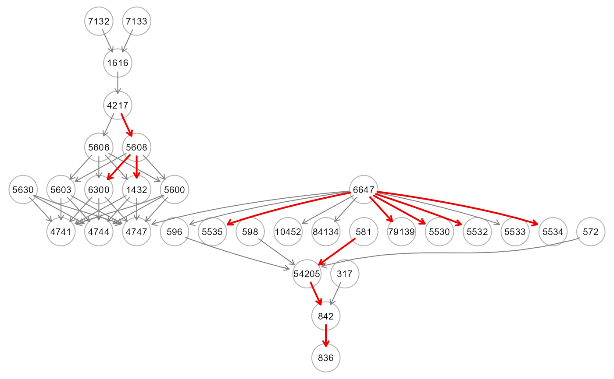

Extraction of ML variable importance measures.
getVariableImportance(object, thr = NULL, verbose = FALSE, ...)A model fitting object from SEMml() function.
A numeric value [0-1] indicating the threshold to apply to the variable importance values to color the graph. If thr = NULL (default), the threshold is set to thr = 0.5*max(abs(variable importance values)).
A logical value. If FALSE (default), the processed graph will not be plotted to screen.
Currently ignored.
A list of three object: (i) est: a data.frame including the connections together with their variable importances (VarImp)), (ii) gest: if the outcome vector is given, a data.frame of VarImp for outcome lavels, and (iii) dag: DAG with colored edges/nodes. If abs(VarImp) > thr will be highlighted in red (VarImp > 0) or blue (VarImp < 0). If the outcome vector is given, nodes with variable importances summed over the outcome levels, i.e. sum(VarImp[outcome levels])) > thr, will be highlighted in pink.
The variable (predictor) importance will be computed considering:
(i) the absolute value of the z-statistic of the model parameters for "sem";
and (ii) the variable importance measures from the rpart,
importance or xgb.importance functions
for "tree", "rf" or "xgb" methods.
add references
# \donttest{
# load ALS data
ig<- alsData$graph
data<- alsData$exprs
data<- transformData(data)$data
#> Conducting the nonparanormal transformation via shrunkun ECDF...done.
#ncores<- parallel::detectCores(logical = FALSE)
ml0<- SEMml(ig, data, outcome=NULL, algo="rf", ncores=2)
#> Running SEM model via ML...
#> done.
#>
#> RF solver ended normally after 23 iterations
#>
#> logL:-41.009436 srmr:0.0905
vi05<- getVariableImportance(ml0, thr=0.5, verbose=TRUE)

table(E(vi05$dag)$color)
#>
#> gray50 red2
#> 34 11
# }